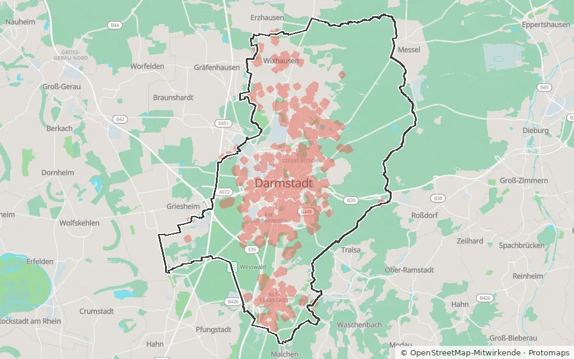
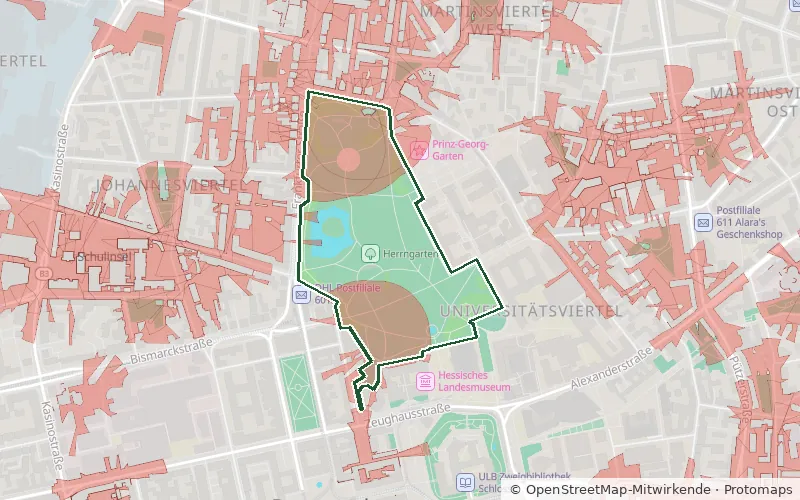
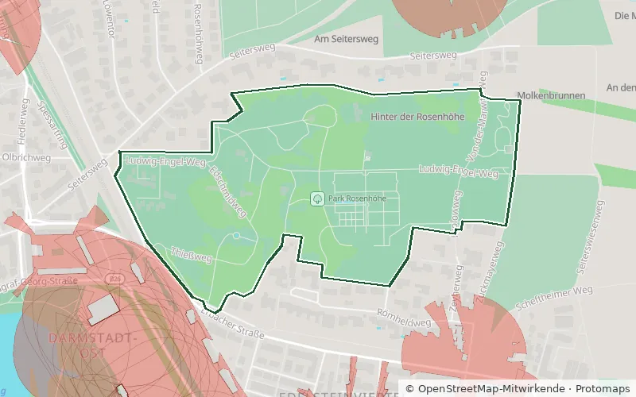
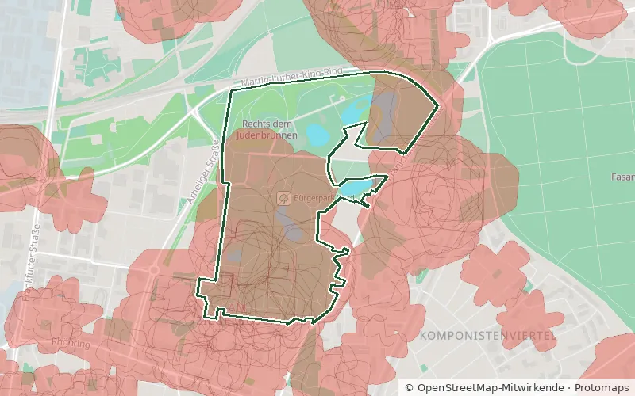
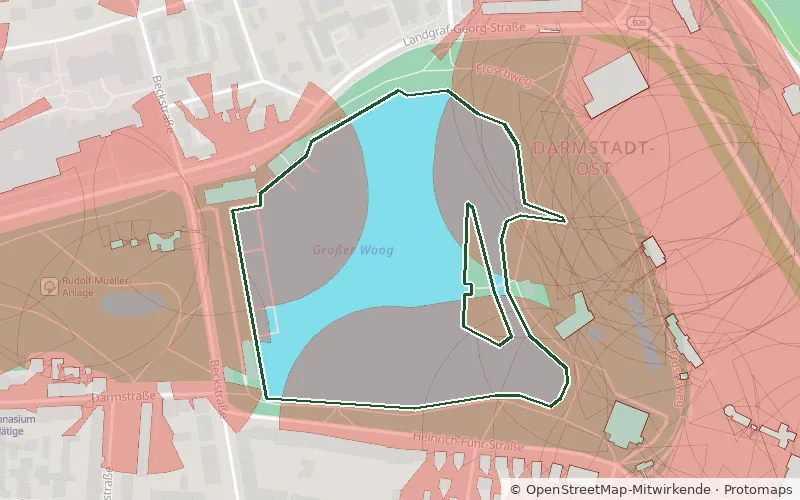
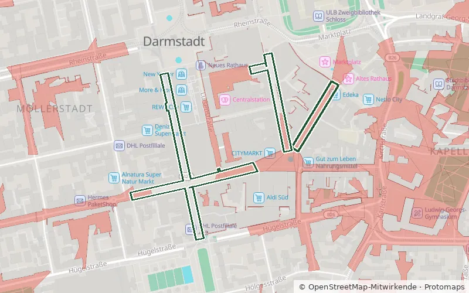
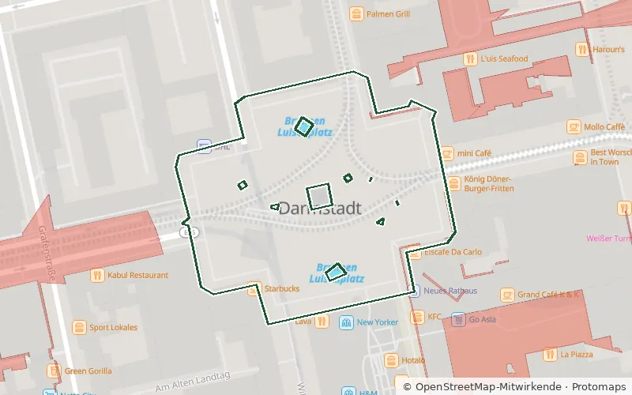

In Darmstadt ist öffentliches Kiffen auf 14 km² verboten, das sind 11,3 % der Stadtfläche von 122 km². Grund sind 826 Einrichtungen wie Schulen und Spielplätze: In ihrer Sichtweite, bis 100 Meter vom Eingang und ohne Gebäude dazwischen, verbietet § 5 KCanG den Konsum. Dazu kommen die Fußgängerzone von 7 bis 20 Uhr und überall die Gegenwart von Minderjährigen.
Die Hälfte der Stadtfläche ist Wald, vor allem im Westwald und in der Koberstadt (49 %), und dort liegt kaum eine Zone; ohne den Wald gerechnet sind es 18,7 %. Seit November 2026 ist Cannabis außerdem rund um das Stadion am Böllenfalltor verboten, wenn dort eine Veranstaltung ist (siehe Böllenfalltor).

Woher die Zonen kommen
| Einrichtung | Anzahl | Zonenfläche |
|---|---|---|
| Schulen | 85 | 3,1 km² |
| Kitas und Kindergärten | 93 | 2,1 km² |
| Kindertagespflege | 17 | 0,3 km² |
| Spielplätze | 218 | 4,2 km² |
| Kinder- und Jugendeinrichtungen | 20 | 0,3 km² |
| Sportstätten | 393 | 7,4 km² |
Jede Art für sich gezählt, Überlappungen also mehrfach. Anbauvereinigungen nur, soweit in OpenStreetMap eingetragen.
Die meisten Zonen gehen auf die 393 Sportstätten zurück, danach auf die 218 Spielplätze. Auf Spielplätzen und Schulhöfen verbietet die Gefahrenabwehrverordnung der Stadt Alkohol und auf Spielplätzen, in Grünanlagen und in der Fußgängerzone Lachgas; Cannabis nennt sie nicht (Gefahrenabwehrverordnung). Die erste Anbauvereinigung der Stadt hat im Dezember 2025 zum ersten Mal Cannabis an ihre Mitglieder ausgegeben (hessenschau); wo sie anbaut, ist nicht veröffentlicht.
Herrngarten und Parks
Im Herrngarten liegen 48 % der Fläche in einer Zone, um zwei Spielplätze und zwei Sportanlagen im Park und die Schulen am Rand. Im Prinz-Georg-Garten daneben sind es 38 %.

Ganz anders der Park Rosenhöhe im Osten: Dort liegt keine Zone (0 %). Im Bürgerpark Nord mit dem Nordbad und über 20 Sportanlagen sind es 67 %.


Am Großen Woog liegen 67 % der Wasserfläche in einer Zone. Als Badesee gilt dort die Badeordnung der Stadt: kein Zutritt unter dem Einfluss berauschender Mittel, Rauchverbot am Becken und am Ufer (Haus- und Badeordnung).

Innenstadt
Eine Abgrenzung der Fußgängerzone hat die Stadt nicht veröffentlicht; ihre Verordnungen sprechen nur von der „Fußgängerzone der Innenstadt“, zu der sie den Luisenplatz zählt. Dort gilt von 7 bis 20 Uhr Konsumverbot; blau sind die Fußgängerbereiche aus OpenStreetMap.
Von Ernst-Ludwig-, Wilhelminen-, Elisabethen- und Ludwigstraße liegen außerdem 36 % in einer Sichtweiten-Zone. Der Luisenplatz liegt fast außerhalb (2 %); dort gilt eine Waffenverbotszone, keine Regel zu Cannabis. Der Marktplatz liegt zu 30 % in einer Zone, der Ludwigsplatz ganz (100 %).


Böllenfalltor und Hochschulen
Seit dem 21. November 2026 verbietet die Stadion-Gefahrenabwehrverordnung, im Gebiet um das Stadion am Böllenfalltor Cannabis mitzuführen oder zu konsumieren, bis zu 5.000 Euro (Verordnung). Die Verbote stehen unter der Überschrift „Verhalten anlässlich von Veranstaltungen im Stadion“; Uhrzeiten nennt die Verordnung nicht. Auf der Karte steht das Gebiet lila unter den örtlichen Verboten, näherungsweise: Im Wald östlich des Böllenfalltorwegs reicht es weiter.
Hochschulen sind nach § 5 KCanG keine Verbotsorte. Die Stadtmitte der TU Darmstadt liegt zu 6 % in einer Zone, die Hochschule Darmstadt zu 16 %.
Was sonst noch gilt
Hessen hat feste Bußgelder: Konsum in einer Verbotszone, auch in der Fußgängerzone, kostet 500 Euro, in Gegenwart von Kindern und Jugendlichen 1.000 Euro (Bußgeldkatalog Hessen). Zuständig ist die Stadt. Für Heinerfest und Schlossgrabenfest haben wir keine eigene Regel zu Cannabis gefunden. Eigene Verbotszonen für Cannabis außer am Stadion hat Darmstadt nicht (Stand 27. November 2026).
Häufige Fragen
Wo darf man in Darmstadt kiffen?
Nach § 5 KCanG außerhalb der roten Flächen, etwa im Park Rosenhöhe (0 % in einer Zone) und im Westwald (5 %). Tagsüber nicht in der Fußgängerzone, nicht am Böllenfalltor bei Veranstaltungen, nie in Gegenwart von Minderjährigen und nicht gegen ein Hausrecht. Weiß heißt nicht sicher erlaubt: Hecken, Bäume und fehlende Einrichtungen kennt die Karte nicht.
Wie genau ist das?
Täglich aus OpenStreetMap gerechnet, mit Gebäuden als Sichthindernis; die Zahlen hier sind vom 27. November 2026. Eine Orientierungshilfe, keine Rechtsauskunft (wie gerechnet wird).
Fehlt eine Einrichtung? Korrekturen in OpenStreetMap stehen am Tag darauf auf der Karte; bitte nur eintragen, was es vor Ort gibt.